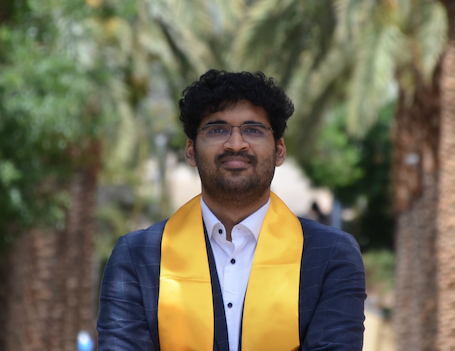

Computer Science Graduate Student & AI Systems Engineer
I specialize in deep learning, computer vision, multimodal AI, and LLM systems. Experienced in PyTorch, FastAPI, distributed training (DDP), on-premises inference, AWS SageMaker, and MLOps, with a proven track record implementing research models and building end-to-end AI pipelines.
Focused on Data Structures & Algorithms, Image Processing & Analysis (Deep Learning), and Machine Learning. Built foundational expertise in algorithms and systems programming.
Shipped Zesto to the iOS App Store with LLM streaming features and Firestore sync. Earned AWS Certified AI Practitioner credential and completed MLOps Masterclass.
Adapted vision transformers for CheXpert multi-label pathology classification (0.9004 AUC), TB lesion localization, and Swin-UNet V2 segmentation with multi-GPU DDP training.
Led development of an on-premise multimodal accessibility pipeline using Qwen3-VL-32B and FastAPI, processing 505 slides in 1.4s/image and detecting 531 WCAG violations.
Advancing research in deep learning, computer vision, and multimodal systems, with graduate coursework in Cloud Computing, Data-Intensive ML Systems, and Data Mining.